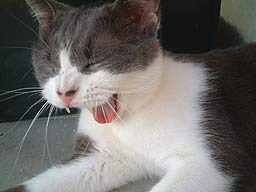

|
■2004/04/03/(Sat)00:00
届きまして
|

スピーカーなかなかいい感じです。
小さなスピーカー２本だけなのですが、音がふんわり広がってる感じです。
詳しいことはわかりませんが、これがBOSEテクノロジーなんだー！って感じです。
微妙に鼓膜を刺激するよーな音を聞くので、音域広くカバーしてるのかなぁと思っているのですが、良くわかりません。
あーあー。そうです。「どんどん英語耳になる！マジックリスニング」を聞いている時の鼓膜の振動に似てます。
ちなみにいまだに英語耳にはならず、家出のドリッピーと共にお蔵入りです。
「マジックリスニング」「家出のドリッピー」「速聴」次にお勧めがありましたらご連絡ください。
|
|
|